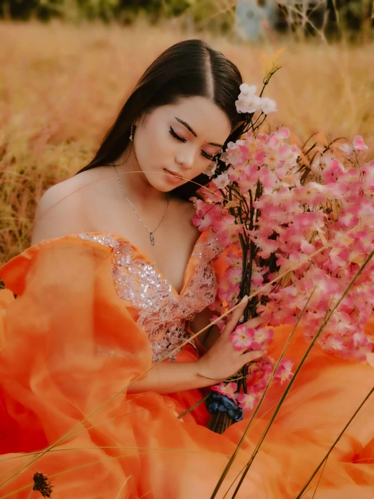

GET TO KNOW ME
Hello! I'm Maria Allysa Deligero Capagngan, 19 years old, currently staying at D-5 Cabulakan, Brgy. Sacol, Buenavista, Agusan del Norte.
I am passionate about dancing ang singing. I am a 2nd year BSIT student at Saint Michael College of Caraga. In my free time, I enjoy learning new skills and making myself positive in all aspects in life.
MY LIFESTORY
- My Chilhood Years
- My Teenage Years
- My Adulthood
This is me during my childhood years. I used to join pageantry before because I want to.
This is me in my Teenage years where I able to multitask everything despite of being a certified masakiton.
Now as a fully fledged individual, I am now ready to step out into a complex world.
MY HOBBIES
- Dancing
- Singing
- Modeling
- Eating
- Sleeping
Dance is my ultimate form of self-expression and emotional release. Beyond choreography, it's a therapeutic journey that liberates me from stress and anxiety. The sheer joy of movement invigorates my spirit, while the dance floor becomes a canvas for my creativity. It's a celebration of diversity, connecting me with global traditions. Each step conquered builds my confidence, and the dance community offers lasting friendships. Dance, a timeless and universal language, weaves an enchanting tapestry of joy and fulfillment into the very fabric of my life.
Singing, for me, is a profound channel for self-expression and emotional release. The melody of my voice becomes a language through which I communicate the depths of my feelings, aspirations, and the sheer joy of existence. Singing is a therapeutic journey, allowing me to navigate and release stress, anxiety, and a myriad of emotions. The act of vocalizing brings about a unique sense of joy, creating a harmonious connection between my inner world and the melody I create. Singing transcends boundaries, offering a universal language that connects me with diverse cultures and people. It is an art form that not only enriches my life with musicality but also provides a platform for personal growth, creativity, and a sense of community. In every note, I find an escape, a celebration, and a timeless expression of my soul.
Modeling is more than striking poses; it is a captivating journey of self-expression and artistry. Through the lens, I embody diverse characters, telling stories without words. Modeling is an avenue to showcase the beauty of individuality, embracing imperfections as unique features. It empowers me to celebrate self-confidence and body positivity. Beyond aesthetics, it fosters creativity, as each photoshoot is a collaboration of ideas and visions. Modeling introduces me to the vibrant world of fashion, allowing me to explore different styles and cultures. It's a dynamic realm where every click captures a moment, etching an indelible mark on the canvas of my visual narrative.
Eating is a fundamental aspect of life that extends beyond mere sustenance—it is a sensory and cultural experience that brings joy and nourishment to both body and soul. The flavors, textures, and aromas of food create a symphony for the senses, allowing me to savor the richness of diverse cuisines. It serves as a communal activity, fostering connections with others, whether in shared meals with loved ones or exploring new culinary delights with friends. Eating is a celebration of culture, a journey into culinary artistry that transcends geographical boundaries, inviting me to appreciate the world's diversity one bite at a time.
Sleeping is a vital cornerstone of well-being, essential for physical and mental health. As I surrender to the embrace of sleep, my body undergoes a transformative process of rejuvenation and repair. In the tranquil realm of dreams, my mind weaves narratives that often reflect the subconscious, offering a surreal escape. Quality sleep fosters cognitive function, emotional resilience, and overall vitality. Each night's rest is a reset, providing the energy needed to face the challenges of the day ahead. Sleeping is a silent yet profound act, a fundamental investment in the restoration and resilience of both body and mind.
MY FAVORITES
MY OHANA
- HIGH SCHOOL FRIENDS
- COLLEGE FRIENDS
- MY OHANA